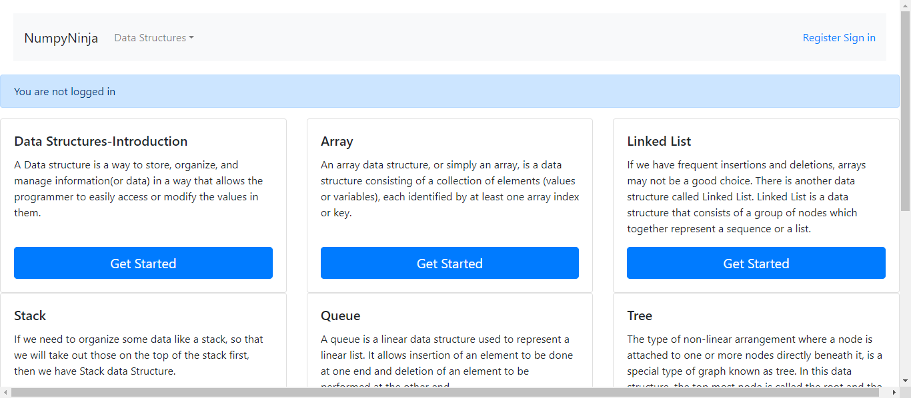

-
Feature for Queue Validation
4:21:13 PM / 00:00:54:301 Fail
Feature for Queue Validation
08.21.2023 4:21:13 PM 08.21.2023 4:22:07 PM 00:00:54:301 · #test-id=1I want to use this template for my feature filePassUser enters Queue PageGiven User logged in homepage for QueueWhen User select Queue from dropdownThen User should be directed to Queue pageAnd "Queue" is displayed on Queue pageAnd User checks for Topics covered in Queue pageFailTryEditor verification in each page for valid codeFailTryEditor verification in each page for valid codeGiven User is in Queue PageWhen User clicks for options "Implementation of Queue in Python" in Queue pagedefenitions.Hooks.takeScreenshot(io.cucumber.java.Scenario)User_clicks_for_options_"Implementation_of_Queue_in_Python"_in_Queue_pageUser_clicks_for_options_"Implementation_of_Queue_in_Python"_in_Queue_page Then User lands in Topics "Implementation of Queue in Python" in Queue PageStep skippedAnd Checks for links available in Queue pageStep skippedWhen User clicks on Try Here button in Queue pageStep skippedThen User navigates to a page having TryEditor and Run Button in QueueStep skippedWhen User gets valid input from "inputs" and 1 to run a tryEditor code in QueueStep skippedThen User is presented with run output in QueueStep skippedFailTryEditor verification in each page for valid codeGiven User is in Queue PageWhen User clicks for options "Implementation using collections.deque" in Queue pagedefenitions.Hooks.takeScreenshot(io.cucumber.java.Scenario)User_clicks_for_options_"Implementation_using_collections.deque"_in_Queue_page
Then User lands in Topics "Implementation of Queue in Python" in Queue PageStep skippedAnd Checks for links available in Queue pageStep skippedWhen User clicks on Try Here button in Queue pageStep skippedThen User navigates to a page having TryEditor and Run Button in QueueStep skippedWhen User gets valid input from "inputs" and 1 to run a tryEditor code in QueueStep skippedThen User is presented with run output in QueueStep skippedFailTryEditor verification in each page for valid codeGiven User is in Queue PageWhen User clicks for options "Implementation using collections.deque" in Queue pagedefenitions.Hooks.takeScreenshot(io.cucumber.java.Scenario)User_clicks_for_options_"Implementation_using_collections.deque"_in_Queue_page User_clicks_for_options_"Implementation_using_collections.deque"_in_Queue_page
User_clicks_for_options_"Implementation_using_collections.deque"_in_Queue_page Then User lands in Topics "Implementation using collections.deque" in Queue PageStep skippedAnd Checks for links available in Queue pageStep skippedWhen User clicks on Try Here button in Queue pageStep skippedThen User navigates to a page having TryEditor and Run Button in QueueStep skippedWhen User gets valid input from "inputs" and 1 to run a tryEditor code in QueueStep skippedThen User is presented with run output in QueueStep skippedFailTryEditor verification in each page for valid codeGiven User is in Queue PageWhen User clicks for options "Implementation using array" in Queue pagedefenitions.Hooks.takeScreenshot(io.cucumber.java.Scenario)User_clicks_for_options_"Implementation_using_array"_in_Queue_page
Then User lands in Topics "Implementation using collections.deque" in Queue PageStep skippedAnd Checks for links available in Queue pageStep skippedWhen User clicks on Try Here button in Queue pageStep skippedThen User navigates to a page having TryEditor and Run Button in QueueStep skippedWhen User gets valid input from "inputs" and 1 to run a tryEditor code in QueueStep skippedThen User is presented with run output in QueueStep skippedFailTryEditor verification in each page for valid codeGiven User is in Queue PageWhen User clicks for options "Implementation using array" in Queue pagedefenitions.Hooks.takeScreenshot(io.cucumber.java.Scenario)User_clicks_for_options_"Implementation_using_array"_in_Queue_page User_clicks_for_options_"Implementation_using_array"_in_Queue_page
User_clicks_for_options_"Implementation_using_array"_in_Queue_page Then User lands in Topics "Implementation using array" in Queue PageStep skippedAnd Checks for links available in Queue pageStep skippedWhen User clicks on Try Here button in Queue pageStep skippedThen User navigates to a page having TryEditor and Run Button in QueueStep skippedWhen User gets valid input from "inputs" and 1 to run a tryEditor code in QueueStep skippedThen User is presented with run output in QueueStep skippedFailTryEditor verification in each page for valid codeGiven User is in Queue PageWhen User clicks for options "Queue Operations" in Queue pagedefenitions.Hooks.takeScreenshot(io.cucumber.java.Scenario)User_clicks_for_options_"Queue_Operations"_in_Queue_page
Then User lands in Topics "Implementation using array" in Queue PageStep skippedAnd Checks for links available in Queue pageStep skippedWhen User clicks on Try Here button in Queue pageStep skippedThen User navigates to a page having TryEditor and Run Button in QueueStep skippedWhen User gets valid input from "inputs" and 1 to run a tryEditor code in QueueStep skippedThen User is presented with run output in QueueStep skippedFailTryEditor verification in each page for valid codeGiven User is in Queue PageWhen User clicks for options "Queue Operations" in Queue pagedefenitions.Hooks.takeScreenshot(io.cucumber.java.Scenario)User_clicks_for_options_"Queue_Operations"_in_Queue_page User_clicks_for_options_"Queue_Operations"_in_Queue_page
User_clicks_for_options_"Queue_Operations"_in_Queue_page Then User lands in Topics "Queue Operations" in Queue PageStep skippedAnd Checks for links available in Queue pageStep skippedWhen User clicks on Try Here button in Queue pageStep skippedThen User navigates to a page having TryEditor and Run Button in QueueStep skippedWhen User gets valid input from "inputs" and 1 to run a tryEditor code in QueueStep skippedThen User is presented with run output in QueueStep skippedFailTryEditor verification in each page for invalid codeFailTryEditor verification in each page for invalid codeGiven User is in Queue PageWhen User clicks for options "Implementation of Queue in Python" in Queue pagedefenitions.Hooks.takeScreenshot(io.cucumber.java.Scenario)User_clicks_for_options_"Implementation_of_Queue_in_Python"_in_Queue_page
Then User lands in Topics "Queue Operations" in Queue PageStep skippedAnd Checks for links available in Queue pageStep skippedWhen User clicks on Try Here button in Queue pageStep skippedThen User navigates to a page having TryEditor and Run Button in QueueStep skippedWhen User gets valid input from "inputs" and 1 to run a tryEditor code in QueueStep skippedThen User is presented with run output in QueueStep skippedFailTryEditor verification in each page for invalid codeFailTryEditor verification in each page for invalid codeGiven User is in Queue PageWhen User clicks for options "Implementation of Queue in Python" in Queue pagedefenitions.Hooks.takeScreenshot(io.cucumber.java.Scenario)User_clicks_for_options_"Implementation_of_Queue_in_Python"_in_Queue_page User_clicks_for_options_"Implementation_of_Queue_in_Python"_in_Queue_page
User_clicks_for_options_"Implementation_of_Queue_in_Python"_in_Queue_page Then User lands in Topics "Implementation of Queue in Python" in Queue PageStep skippedAnd Checks for links available in Queue pageStep skippedWhen User clicks on Try Here button in Queue pageStep skippedThen User navigates to a page having TryEditor and Run Button in QueueStep skippedWhen User gets invalid input from "inputs" and 2 to run a tryEditor code in QueueStep skippedThen User gets error message in QueueStep skippedFailTryEditor verification in each page for invalid codeGiven User is in Queue PageWhen User clicks for options "Implementation using collections.deque" in Queue pagedefenitions.Hooks.takeScreenshot(io.cucumber.java.Scenario)User_clicks_for_options_"Implementation_using_collections.deque"_in_Queue_page
Then User lands in Topics "Implementation of Queue in Python" in Queue PageStep skippedAnd Checks for links available in Queue pageStep skippedWhen User clicks on Try Here button in Queue pageStep skippedThen User navigates to a page having TryEditor and Run Button in QueueStep skippedWhen User gets invalid input from "inputs" and 2 to run a tryEditor code in QueueStep skippedThen User gets error message in QueueStep skippedFailTryEditor verification in each page for invalid codeGiven User is in Queue PageWhen User clicks for options "Implementation using collections.deque" in Queue pagedefenitions.Hooks.takeScreenshot(io.cucumber.java.Scenario)User_clicks_for_options_"Implementation_using_collections.deque"_in_Queue_page User_clicks_for_options_"Implementation_using_collections.deque"_in_Queue_page
User_clicks_for_options_"Implementation_using_collections.deque"_in_Queue_page Then User lands in Topics "Implementation using collections.deque" in Queue PageStep skippedAnd Checks for links available in Queue pageStep skippedWhen User clicks on Try Here button in Queue pageStep skippedThen User navigates to a page having TryEditor and Run Button in QueueStep skippedWhen User gets invalid input from "inputs" and 2 to run a tryEditor code in QueueStep skippedThen User gets error message in QueueStep skippedFailTryEditor verification in each page for invalid codeGiven User is in Queue PageWhen User clicks for options "Implementation using array" in Queue pagedefenitions.Hooks.takeScreenshot(io.cucumber.java.Scenario)User_clicks_for_options_"Implementation_using_array"_in_Queue_page
Then User lands in Topics "Implementation using collections.deque" in Queue PageStep skippedAnd Checks for links available in Queue pageStep skippedWhen User clicks on Try Here button in Queue pageStep skippedThen User navigates to a page having TryEditor and Run Button in QueueStep skippedWhen User gets invalid input from "inputs" and 2 to run a tryEditor code in QueueStep skippedThen User gets error message in QueueStep skippedFailTryEditor verification in each page for invalid codeGiven User is in Queue PageWhen User clicks for options "Implementation using array" in Queue pagedefenitions.Hooks.takeScreenshot(io.cucumber.java.Scenario)User_clicks_for_options_"Implementation_using_array"_in_Queue_page User_clicks_for_options_"Implementation_using_array"_in_Queue_page
User_clicks_for_options_"Implementation_using_array"_in_Queue_page Then User lands in Topics "Implementation using array" in Queue PageStep skippedAnd Checks for links available in Queue pageStep skippedWhen User clicks on Try Here button in Queue pageStep skippedThen User navigates to a page having TryEditor and Run Button in QueueStep skippedWhen User gets invalid input from "inputs" and 2 to run a tryEditor code in QueueStep skippedThen User gets error message in QueueStep skippedFailTryEditor verification in each page for invalid codeGiven User is in Queue PageWhen User clicks for options "Queue Operations" in Queue pagedefenitions.Hooks.takeScreenshot(io.cucumber.java.Scenario)User_clicks_for_options_"Queue_Operations"_in_Queue_page
Then User lands in Topics "Implementation using array" in Queue PageStep skippedAnd Checks for links available in Queue pageStep skippedWhen User clicks on Try Here button in Queue pageStep skippedThen User navigates to a page having TryEditor and Run Button in QueueStep skippedWhen User gets invalid input from "inputs" and 2 to run a tryEditor code in QueueStep skippedThen User gets error message in QueueStep skippedFailTryEditor verification in each page for invalid codeGiven User is in Queue PageWhen User clicks for options "Queue Operations" in Queue pagedefenitions.Hooks.takeScreenshot(io.cucumber.java.Scenario)User_clicks_for_options_"Queue_Operations"_in_Queue_page User_clicks_for_options_"Queue_Operations"_in_Queue_page
User_clicks_for_options_"Queue_Operations"_in_Queue_page Then User lands in Topics "Queue Operations" in Queue PageStep skippedAnd Checks for links available in Queue pageStep skippedWhen User clicks on Try Here button in Queue pageStep skippedThen User navigates to a page having TryEditor and Run Button in QueueStep skippedWhen User gets invalid input from "inputs" and 2 to run a tryEditor code in QueueStep skippedThen User gets error message in QueueStep skippedFailTryEditor in each links for valid codeFailTryEditor in each links for valid codeGiven User is in Queue PageWhen User clicks for options "Implementation of Queue in Python" in Queue pagedefenitions.Hooks.takeScreenshot(io.cucumber.java.Scenario)User_clicks_for_options_"Implementation_of_Queue_in_Python"_in_Queue_page
Then User lands in Topics "Queue Operations" in Queue PageStep skippedAnd Checks for links available in Queue pageStep skippedWhen User clicks on Try Here button in Queue pageStep skippedThen User navigates to a page having TryEditor and Run Button in QueueStep skippedWhen User gets invalid input from "inputs" and 2 to run a tryEditor code in QueueStep skippedThen User gets error message in QueueStep skippedFailTryEditor in each links for valid codeFailTryEditor in each links for valid codeGiven User is in Queue PageWhen User clicks for options "Implementation of Queue in Python" in Queue pagedefenitions.Hooks.takeScreenshot(io.cucumber.java.Scenario)User_clicks_for_options_"Implementation_of_Queue_in_Python"_in_Queue_page User_clicks_for_options_"Implementation_of_Queue_in_Python"_in_Queue_page
User_clicks_for_options_"Implementation_of_Queue_in_Python"_in_Queue_page And User clicks on link "Implementation using collections.deque" in the Queue pageStep skippedWhen User clicks on Try Here button in Queue pageStep skippedThen User navigates to a page having TryEditor and Run Button in QueueStep skippedWhen User gets valid input from "inputs" and 1 to run a tryEditor code in QueueStep skippedThen User is presented with run output in QueueStep skippedFailTryEditor in each links for valid codeGiven User is in Queue PageWhen User clicks for options "Implementation using collections.deque" in Queue pagedefenitions.Hooks.takeScreenshot(io.cucumber.java.Scenario)User_clicks_for_options_"Implementation_using_collections.deque"_in_Queue_page
And User clicks on link "Implementation using collections.deque" in the Queue pageStep skippedWhen User clicks on Try Here button in Queue pageStep skippedThen User navigates to a page having TryEditor and Run Button in QueueStep skippedWhen User gets valid input from "inputs" and 1 to run a tryEditor code in QueueStep skippedThen User is presented with run output in QueueStep skippedFailTryEditor in each links for valid codeGiven User is in Queue PageWhen User clicks for options "Implementation using collections.deque" in Queue pagedefenitions.Hooks.takeScreenshot(io.cucumber.java.Scenario)User_clicks_for_options_"Implementation_using_collections.deque"_in_Queue_page User_clicks_for_options_"Implementation_using_collections.deque"_in_Queue_page
User_clicks_for_options_"Implementation_using_collections.deque"_in_Queue_page And User clicks on link "Implementation of Queue in Python" in the Queue pageStep skippedWhen User clicks on Try Here button in Queue pageStep skippedThen User navigates to a page having TryEditor and Run Button in QueueStep skippedWhen User gets valid input from "inputs" and 1 to run a tryEditor code in QueueStep skippedThen User is presented with run output in QueueStep skippedFailTryEditor in each links for valid codeGiven User is in Queue PageWhen User clicks for options "Implementation using array" in Queue pagedefenitions.Hooks.takeScreenshot(io.cucumber.java.Scenario)User_clicks_for_options_"Implementation_using_array"_in_Queue_page
And User clicks on link "Implementation of Queue in Python" in the Queue pageStep skippedWhen User clicks on Try Here button in Queue pageStep skippedThen User navigates to a page having TryEditor and Run Button in QueueStep skippedWhen User gets valid input from "inputs" and 1 to run a tryEditor code in QueueStep skippedThen User is presented with run output in QueueStep skippedFailTryEditor in each links for valid codeGiven User is in Queue PageWhen User clicks for options "Implementation using array" in Queue pagedefenitions.Hooks.takeScreenshot(io.cucumber.java.Scenario)User_clicks_for_options_"Implementation_using_array"_in_Queue_page User_clicks_for_options_"Implementation_using_array"_in_Queue_page
User_clicks_for_options_"Implementation_using_array"_in_Queue_page And User clicks on link "Queue Operations" in the Queue pageStep skippedWhen User clicks on Try Here button in Queue pageStep skippedThen User navigates to a page having TryEditor and Run Button in QueueStep skippedWhen User gets valid input from "inputs" and 1 to run a tryEditor code in QueueStep skippedThen User is presented with run output in QueueStep skippedFailTryEditor in each links for valid codeGiven User is in Queue PageWhen User clicks for options "Queue Operations" in Queue pagedefenitions.Hooks.takeScreenshot(io.cucumber.java.Scenario)User_clicks_for_options_"Queue_Operations"_in_Queue_page
And User clicks on link "Queue Operations" in the Queue pageStep skippedWhen User clicks on Try Here button in Queue pageStep skippedThen User navigates to a page having TryEditor and Run Button in QueueStep skippedWhen User gets valid input from "inputs" and 1 to run a tryEditor code in QueueStep skippedThen User is presented with run output in QueueStep skippedFailTryEditor in each links for valid codeGiven User is in Queue PageWhen User clicks for options "Queue Operations" in Queue pagedefenitions.Hooks.takeScreenshot(io.cucumber.java.Scenario)User_clicks_for_options_"Queue_Operations"_in_Queue_page User_clicks_for_options_"Queue_Operations"_in_Queue_page
User_clicks_for_options_"Queue_Operations"_in_Queue_page And User clicks on link "Implementation using array" in the Queue pageStep skippedWhen User clicks on Try Here button in Queue pageStep skippedThen User navigates to a page having TryEditor and Run Button in QueueStep skippedWhen User gets valid input from "inputs" and 1 to run a tryEditor code in QueueStep skippedThen User is presented with run output in QueueStep skippedFailTryEditor in each links for invalid codeFailTryEditor in each links for invalid codeGiven User is in Queue PageWhen User clicks for options "Implementation of Queue in Python" in Queue pagedefenitions.Hooks.takeScreenshot(io.cucumber.java.Scenario)User_clicks_for_options_"Implementation_of_Queue_in_Python"_in_Queue_page
And User clicks on link "Implementation using array" in the Queue pageStep skippedWhen User clicks on Try Here button in Queue pageStep skippedThen User navigates to a page having TryEditor and Run Button in QueueStep skippedWhen User gets valid input from "inputs" and 1 to run a tryEditor code in QueueStep skippedThen User is presented with run output in QueueStep skippedFailTryEditor in each links for invalid codeFailTryEditor in each links for invalid codeGiven User is in Queue PageWhen User clicks for options "Implementation of Queue in Python" in Queue pagedefenitions.Hooks.takeScreenshot(io.cucumber.java.Scenario)User_clicks_for_options_"Implementation_of_Queue_in_Python"_in_Queue_page User_clicks_for_options_"Implementation_of_Queue_in_Python"_in_Queue_page
User_clicks_for_options_"Implementation_of_Queue_in_Python"_in_Queue_page And User clicks on link "Queue Operations" in the Queue pageStep skippedWhen User clicks on Try Here button in Queue pageStep skippedThen User navigates to a page having TryEditor and Run Button in QueueStep skippedWhen User gets invalid input from "inputs" and 2 to run a tryEditor code in QueueStep skippedThen User gets error message in QueueStep skippedFailTryEditor in each links for invalid codeGiven User is in Queue PageWhen User clicks for options "Implementation using collections.deque" in Queue pagedefenitions.Hooks.takeScreenshot(io.cucumber.java.Scenario)User_clicks_for_options_"Implementation_using_collections.deque"_in_Queue_page
And User clicks on link "Queue Operations" in the Queue pageStep skippedWhen User clicks on Try Here button in Queue pageStep skippedThen User navigates to a page having TryEditor and Run Button in QueueStep skippedWhen User gets invalid input from "inputs" and 2 to run a tryEditor code in QueueStep skippedThen User gets error message in QueueStep skippedFailTryEditor in each links for invalid codeGiven User is in Queue PageWhen User clicks for options "Implementation using collections.deque" in Queue pagedefenitions.Hooks.takeScreenshot(io.cucumber.java.Scenario)User_clicks_for_options_"Implementation_using_collections.deque"_in_Queue_page User_clicks_for_options_"Implementation_using_collections.deque"_in_Queue_page
User_clicks_for_options_"Implementation_using_collections.deque"_in_Queue_page And User clicks on link "Implementation using array" in the Queue pageStep skippedWhen User clicks on Try Here button in Queue pageStep skippedThen User navigates to a page having TryEditor and Run Button in QueueStep skippedWhen User gets invalid input from "inputs" and 2 to run a tryEditor code in QueueStep skippedThen User gets error message in QueueStep skippedFailTryEditor in each links for invalid codeGiven User is in Queue PageWhen User clicks for options "Implementation using array" in Queue pagedefenitions.Hooks.takeScreenshot(io.cucumber.java.Scenario)User_clicks_for_options_"Implementation_using_array"_in_Queue_page
And User clicks on link "Implementation using array" in the Queue pageStep skippedWhen User clicks on Try Here button in Queue pageStep skippedThen User navigates to a page having TryEditor and Run Button in QueueStep skippedWhen User gets invalid input from "inputs" and 2 to run a tryEditor code in QueueStep skippedThen User gets error message in QueueStep skippedFailTryEditor in each links for invalid codeGiven User is in Queue PageWhen User clicks for options "Implementation using array" in Queue pagedefenitions.Hooks.takeScreenshot(io.cucumber.java.Scenario)User_clicks_for_options_"Implementation_using_array"_in_Queue_page User_clicks_for_options_"Implementation_using_array"_in_Queue_page
User_clicks_for_options_"Implementation_using_array"_in_Queue_page And User clicks on link "Implementation of Queue in Python" in the Queue pageStep skippedWhen User clicks on Try Here button in Queue pageStep skippedThen User navigates to a page having TryEditor and Run Button in QueueStep skippedWhen User gets invalid input from "inputs" and 2 to run a tryEditor code in QueueStep skippedThen User gets error message in QueueStep skippedFailTryEditor in each links for invalid codeGiven User is in Queue PageWhen User clicks for options "Queue Operations" in Queue pagedefenitions.Hooks.takeScreenshot(io.cucumber.java.Scenario)User_clicks_for_options_"Queue_Operations"_in_Queue_page
And User clicks on link "Implementation of Queue in Python" in the Queue pageStep skippedWhen User clicks on Try Here button in Queue pageStep skippedThen User navigates to a page having TryEditor and Run Button in QueueStep skippedWhen User gets invalid input from "inputs" and 2 to run a tryEditor code in QueueStep skippedThen User gets error message in QueueStep skippedFailTryEditor in each links for invalid codeGiven User is in Queue PageWhen User clicks for options "Queue Operations" in Queue pagedefenitions.Hooks.takeScreenshot(io.cucumber.java.Scenario)User_clicks_for_options_"Queue_Operations"_in_Queue_page User_clicks_for_options_"Queue_Operations"_in_Queue_page
User_clicks_for_options_"Queue_Operations"_in_Queue_page And User clicks on link "Implementation using collections.deque" in the Queue pageStep skippedWhen User clicks on Try Here button in Queue pageStep skippedThen User navigates to a page having TryEditor and Run Button in QueueStep skippedWhen User gets invalid input from "inputs" and 2 to run a tryEditor code in QueueStep skippedThen User gets error message in QueueStep skippedFailPractice questions validationFailPractice questions validationGiven User is in Queue PageWhen User clicks for options "Implementation of Queue in Python" in Queue pagedefenitions.Hooks.takeScreenshot(io.cucumber.java.Scenario)User_clicks_for_options_"Implementation_of_Queue_in_Python"_in_Queue_page
And User clicks on link "Implementation using collections.deque" in the Queue pageStep skippedWhen User clicks on Try Here button in Queue pageStep skippedThen User navigates to a page having TryEditor and Run Button in QueueStep skippedWhen User gets invalid input from "inputs" and 2 to run a tryEditor code in QueueStep skippedThen User gets error message in QueueStep skippedFailPractice questions validationFailPractice questions validationGiven User is in Queue PageWhen User clicks for options "Implementation of Queue in Python" in Queue pagedefenitions.Hooks.takeScreenshot(io.cucumber.java.Scenario)User_clicks_for_options_"Implementation_of_Queue_in_Python"_in_Queue_page User_clicks_for_options_"Implementation_of_Queue_in_Python"_in_Queue_page
User_clicks_for_options_"Implementation_of_Queue_in_Python"_in_Queue_page And clicks on Practice questions in Queue pageStep skippedThen User navigates to Practice questions Page in QueueStep skippedFailPractice questions validationGiven User is in Queue PageWhen User clicks for options "Implementation using collections.deque" in Queue pagedefenitions.Hooks.takeScreenshot(io.cucumber.java.Scenario)User_clicks_for_options_"Implementation_using_collections.deque"_in_Queue_page
And clicks on Practice questions in Queue pageStep skippedThen User navigates to Practice questions Page in QueueStep skippedFailPractice questions validationGiven User is in Queue PageWhen User clicks for options "Implementation using collections.deque" in Queue pagedefenitions.Hooks.takeScreenshot(io.cucumber.java.Scenario)User_clicks_for_options_"Implementation_using_collections.deque"_in_Queue_page User_clicks_for_options_"Implementation_using_collections.deque"_in_Queue_page
User_clicks_for_options_"Implementation_using_collections.deque"_in_Queue_page And clicks on Practice questions in Queue pageStep skippedThen User navigates to Practice questions Page in QueueStep skippedFailPractice questions validationGiven User is in Queue PageWhen User clicks for options "Implementation using array" in Queue pagedefenitions.Hooks.takeScreenshot(io.cucumber.java.Scenario)User_clicks_for_options_"Implementation_using_array"_in_Queue_page
And clicks on Practice questions in Queue pageStep skippedThen User navigates to Practice questions Page in QueueStep skippedFailPractice questions validationGiven User is in Queue PageWhen User clicks for options "Implementation using array" in Queue pagedefenitions.Hooks.takeScreenshot(io.cucumber.java.Scenario)User_clicks_for_options_"Implementation_using_array"_in_Queue_page User_clicks_for_options_"Implementation_using_array"_in_Queue_page
User_clicks_for_options_"Implementation_using_array"_in_Queue_page And clicks on Practice questions in Queue pageStep skippedThen User navigates to Practice questions Page in QueueStep skippedFailPractice questions validationGiven User is in Queue PageWhen User clicks for options "Queue Operations" in Queue pagedefenitions.Hooks.takeScreenshot(io.cucumber.java.Scenario)User_clicks_for_options_"Queue_Operations"_in_Queue_page
And clicks on Practice questions in Queue pageStep skippedThen User navigates to Practice questions Page in QueueStep skippedFailPractice questions validationGiven User is in Queue PageWhen User clicks for options "Queue Operations" in Queue pagedefenitions.Hooks.takeScreenshot(io.cucumber.java.Scenario)User_clicks_for_options_"Queue_Operations"_in_Queue_page User_clicks_for_options_"Queue_Operations"_in_Queue_page
User_clicks_for_options_"Queue_Operations"_in_Queue_page And clicks on Practice questions in Queue pageStep skippedThen User navigates to Practice questions Page in QueueStep skipped
And clicks on Practice questions in Queue pageStep skippedThen User navigates to Practice questions Page in QueueStep skipped
-
org.openqa.selenium.NoSuchElementException
20 tests
org.openqa.selenium.NoSuchElementException
20 failedStatus Timestamp TestName Fail 16:21:19 PM When User clicks for options "Implementation of Queue in Python" in Queue page Feature for Queue Validation.TryEditor verification in each page for valid code.When User clicks for options "Implementation of Queue in Python" in Queue pageFail 16:21:22 PM When User clicks for options "Implementation using collections.deque" in Queue page Feature for Queue Validation.TryEditor verification in each page for valid code.When User clicks for options "Implementation using collections.deque" in Queue pageFail 16:21:24 PM When User clicks for options "Implementation using array" in Queue page Feature for Queue Validation.TryEditor verification in each page for valid code.When User clicks for options "Implementation using array" in Queue pageFail 16:21:27 PM When User clicks for options "Queue Operations" in Queue page Feature for Queue Validation.TryEditor verification in each page for valid code.When User clicks for options "Queue Operations" in Queue pageFail 16:21:29 PM When User clicks for options "Implementation of Queue in Python" in Queue page Feature for Queue Validation.TryEditor verification in each page for invalid code.When User clicks for options "Implementation of Queue in Python" in Queue pageFail 16:21:32 PM When User clicks for options "Implementation using collections.deque" in Queue page Feature for Queue Validation.TryEditor verification in each page for invalid code.When User clicks for options "Implementation using collections.deque" in Queue pageFail 16:21:34 PM When User clicks for options "Implementation using array" in Queue page Feature for Queue Validation.TryEditor verification in each page for invalid code.When User clicks for options "Implementation using array" in Queue pageFail 16:21:37 PM When User clicks for options "Queue Operations" in Queue page Feature for Queue Validation.TryEditor verification in each page for invalid code.When User clicks for options "Queue Operations" in Queue pageFail 16:21:39 PM When User clicks for options "Implementation of Queue in Python" in Queue page Feature for Queue Validation.TryEditor in each links for valid code.When User clicks for options "Implementation of Queue in Python" in Queue pageFail 16:21:42 PM When User clicks for options "Implementation using collections.deque" in Queue page Feature for Queue Validation.TryEditor in each links for valid code.When User clicks for options "Implementation using collections.deque" in Queue pageFail 16:21:44 PM When User clicks for options "Implementation using array" in Queue page Feature for Queue Validation.TryEditor in each links for valid code.When User clicks for options "Implementation using array" in Queue pageFail 16:21:46 PM When User clicks for options "Queue Operations" in Queue page Feature for Queue Validation.TryEditor in each links for valid code.When User clicks for options "Queue Operations" in Queue pageFail 16:21:49 PM When User clicks for options "Implementation of Queue in Python" in Queue page Feature for Queue Validation.TryEditor in each links for invalid code.When User clicks for options "Implementation of Queue in Python" in Queue pageFail 16:21:52 PM When User clicks for options "Implementation using collections.deque" in Queue page Feature for Queue Validation.TryEditor in each links for invalid code.When User clicks for options "Implementation using collections.deque" in Queue pageFail 16:21:54 PM When User clicks for options "Implementation using array" in Queue page Feature for Queue Validation.TryEditor in each links for invalid code.When User clicks for options "Implementation using array" in Queue pageFail 16:21:56 PM When User clicks for options "Queue Operations" in Queue page Feature for Queue Validation.TryEditor in each links for invalid code.When User clicks for options "Queue Operations" in Queue pageFail 16:21:59 PM When User clicks for options "Implementation of Queue in Python" in Queue page Feature for Queue Validation.Practice questions validation.When User clicks for options "Implementation of Queue in Python" in Queue pageFail 16:22:01 PM When User clicks for options "Implementation using collections.deque" in Queue page Feature for Queue Validation.Practice questions validation.When User clicks for options "Implementation using collections.deque" in Queue pageFail 16:22:04 PM When User clicks for options "Implementation using array" in Queue page Feature for Queue Validation.Practice questions validation.When User clicks for options "Implementation using array" in Queue pageFail 16:22:06 PM When User clicks for options "Queue Operations" in Queue page Feature for Queue Validation.Practice questions validation.When User clicks for options "Queue Operations" in Queue page
Started
Aug 21, 2023 04:21:11 PM
Ended
Aug 21, 2023 04:22:07 PM
Features Passed
0
Features Failed
1
Features
Scenarios
Steps
Timeline